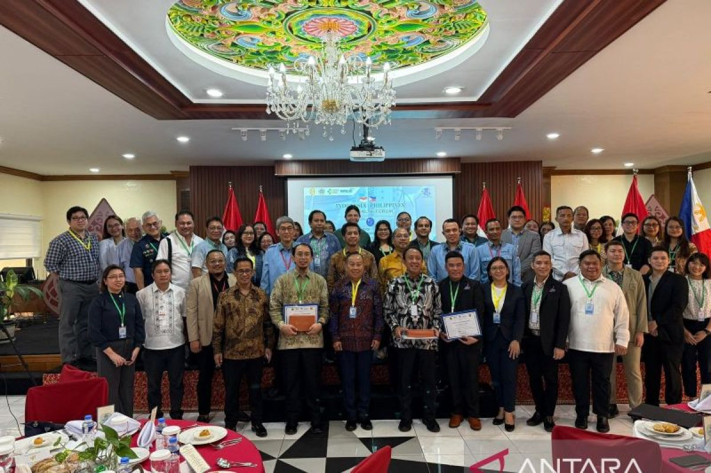
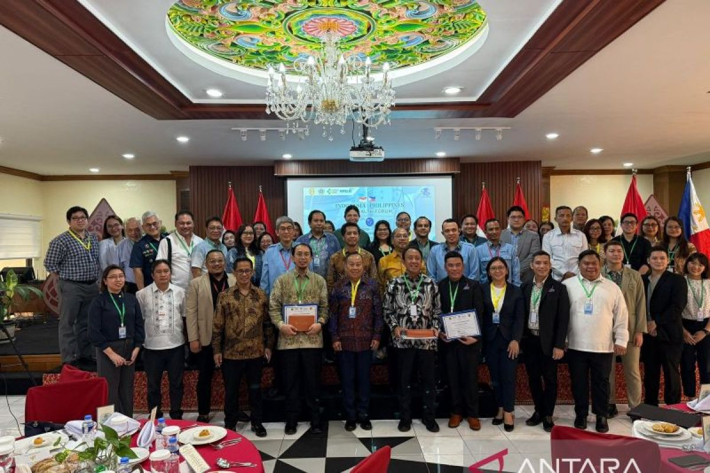

Demi mewujudkan SDG ke 3, Indonesia bekerja sama dengan negara lain untuk saling membantu meningkatkan kesehatan dan mewujudkan SDG ke 3. Contohnya adalah kerjasama bilateral antara Indonesia dan Filipina. Indonesia dan Filipina sudah menjalin kerjasama bilateral selama kurang lebih 76 tahun. Hubungan diplomatik ini dimulai dari 24 November 1949 yang mencakup bidang seperti energi, perikanan, pertanian, pendidikan, kebudayaan, kesehatan, dan perdagangan. Pada bidang kesehatan Indonesia dan Filipina memiliki forum kesehatan Indonesia-Philippines Health Forum (IPHF) dan Indonesia-Philippines Business Health Forum (IPBHF).
IPHF adalah forum kesehatan yang dibuat sebagai bukti dari komitmen bersama untuk meningkatkan kerjasama kesehatan dan mengatasi tantangan kesehatan di kedua negara tersebut. Forum yang terakhir kali dilaksanakan pada 21 Oktober 2024 ini, menjadi wadah kolaboratif untuk memfasilitasi diskusi kesehatan. Seperti tren terkini, tantangan, dan potensi kemitraan ekonomi serta pendidikan di sektor kesehatan.
Selain itu Indonesia dan Filipina juga memiliki forum bisnis kesehatan yang bernama Indonesia-Philippines Business Health Forum (IPBHF) 2025. Pada forum yang dilaksanakan pada 15-16 Mei 2025 ini, bertujuan untuk berkontribusi pada peningkatan akses dan inovasi kesehatan bagi masyarakat kedua negara. Pada forum ini memfasilitasi sesi business matching yang melibatkan 5 perusahaan alat kesehatan Indonesia yang mewakili 15 perusahaan lainnya di bawah naungan HIPELKI (Himpunan Pengembangan Ekosistem Alat Kesehatan Indonesia), serta 50 perusahaan sektor kesehatan dari Filipina Selatan.
Pada 2024, nilai ekspor alat kesehatan Indonesia ke Filipina mencapai US$273 juta atau sekitar Rp4,58 triliun. Dengan penyelenggaraan IPBHF 2025 ini, diharapkan volume perdagangan antara kedua negara dapat meningkat, khususnya di sektor kesehatan.
Dengan adanya kedua forum ini dapat membawa banyak manfaat untuk negara dan masyarakat. Forum ini merupakan bagian dari perayaan 75 tahun hubungan diplomatik kedua negara ini. Dengan adanya hubungan yang erat ini, Indonesia dapat lebih memperkuat kolaborasi di bidang kesehatan, ekonomi, sosial, dan budaya. Sehingga hal ini memudahkan Indonesia dalam melakukan perdagangan dan melakukan investasi. Dengan kemudahan ini Indonesia dapat lebih mudah untuk berkembang lebih lagi
Tidak hanya pemerintah tetapi masyarakat juga dapat merasakan manfaatnya. Dengan diadakannya forum kesehatan ini Indonesia dan Filipina dapat saling menukar informasi tentang masalah kesehatan yang ada dan dapat mencari solusi yang ada. Sehingga hal ini menguntungkan kedua negara karena dapat mendapat solusi baru yang memiliki riset yang mendalam dan informasi yang relevan untuk masalah kesehatan mereka. Tidak hanya itu dengan adanya forum IPBHF ini, masyarakat dapat mendapatkan teknologi kesehatan yang terbaru dari Filipina begitu juga sebaliknya. Hal ini dapat meningkatkan prosedur pengecekan kesehatan yang dapat membuat penurunan angka masalah kesehatan.
Kerjasama bilateral bidang kesehatan ini dapat membantu Indonesia dalam mengembangkan diri dalam bidang kesehatan. Impor dan ekspor alat kesehatan dan diskusi mengenai masalah kesehatan ini dapat membantu meningkatkan kesehatan masyarakat Indonesia. Dengan ini masyarakat Indonesia dapat menjadi lebih sehat dan dapat hidup sejahtera tanpa harus mengkhawatirkan kesehatan mereka secara lebih. Dengan ini Indonesia dapat lebih mudah untuk mencapai SDG ke 3 yaitu kehidupan sehat dan sejahtera.